Personal Leadership
Internship
Introduction
I have begun exploring internship opportunities to gain hands-on experience and deepen my understanding of the industry. This initial research phase has been focused on identifying what employers expect from web development interns, the essential skills required, and how to effectively position myself to secure a valuable internship opportunity.
What I Did
I have started researching internship opportunities for web developers to gain hands-on experience and further develop my skills in a professional setting. My goal is to understand what employers look for in web development interns, the skills I need to have, and how to successfully secure an internship.
How did it go?
Overall, this research has been very insightful and motivating. It has given me a clearer picture of the path ahead and the steps I need to take to grow as a web developer. By identifying the key expectations of employers and aligning my learning accordingly, I feel more confident in pursuing opportunities that will help me transition from a learner to a professional in the field.
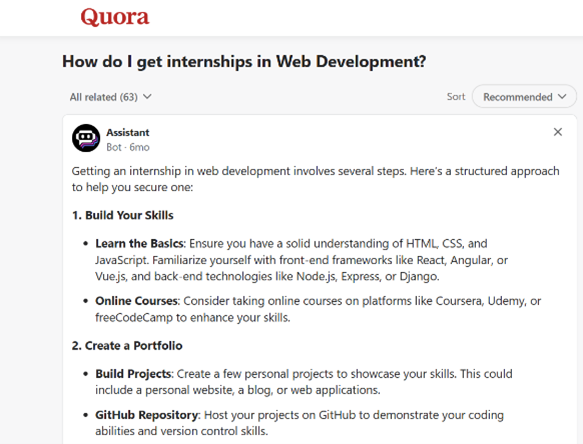
What I Learned
- Build a strong portfolio showcasing my web development projects.
- Improve my problem-solving skills by practicing coding challenges.
- Gain practical experience with popular frameworks and tools used in the industry.
Reflection
This research has helped me understand the competitive nature of web development internships and what I need to do to stand out. Moving forward, I will continue building my skills, applying to relevant opportunities, and preparing for technical interviews. My goal is to gain the knowledge for the future internship where I can contribute to real-world projects and gain valuable industry experience.
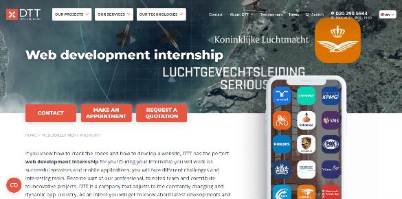
Links:
Art department
Introduction
As part of my exploration into the media world, I visited the art department to gain a better understanding of different artistic and digital techniques. This visit was a chance for me to engage with creative practices and explore potential interests within the broader field of media.
What Did I Do?
Together with my teammates, I attended an art exposition hosted by the department. It was a fascinating and inspiring experience. We walked around the hall and discovered that the space was divided into several themed sections.
On the left side, there were hands-on stations showcasing various media techniques such as Blender, 3D modeling, animation, Illustrator, and other digital art tools. Some areas also offered interactive workshops where visitors could try out these tools and learn the basics.
On the right side, the hall was transformed into a marketplace with booths selling souvenirs like books, stickers, prints, and clothing. At the end of this row of shops, there was a small activity area with a creative “challenge.”
My friends and I decided to participate in the challenge. The task was to create a small sculpture using modeling clay or digital sculpting tools. I chose to make a penguin – it was both fun and a little tricky!
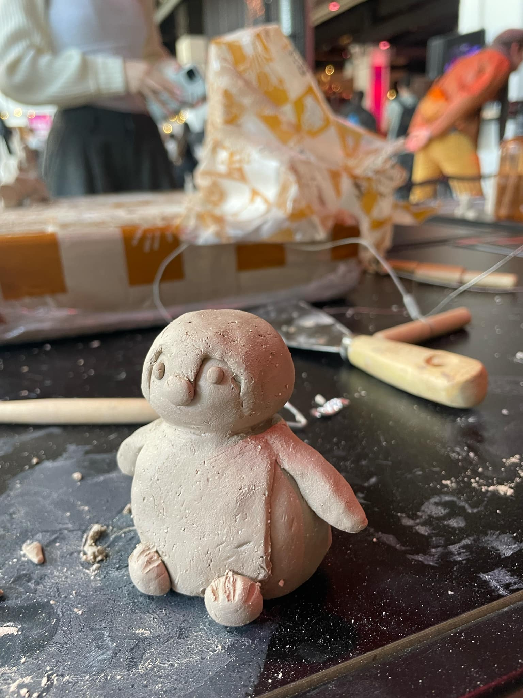
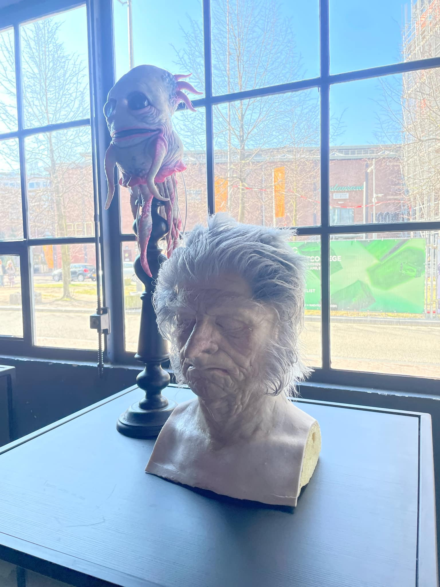
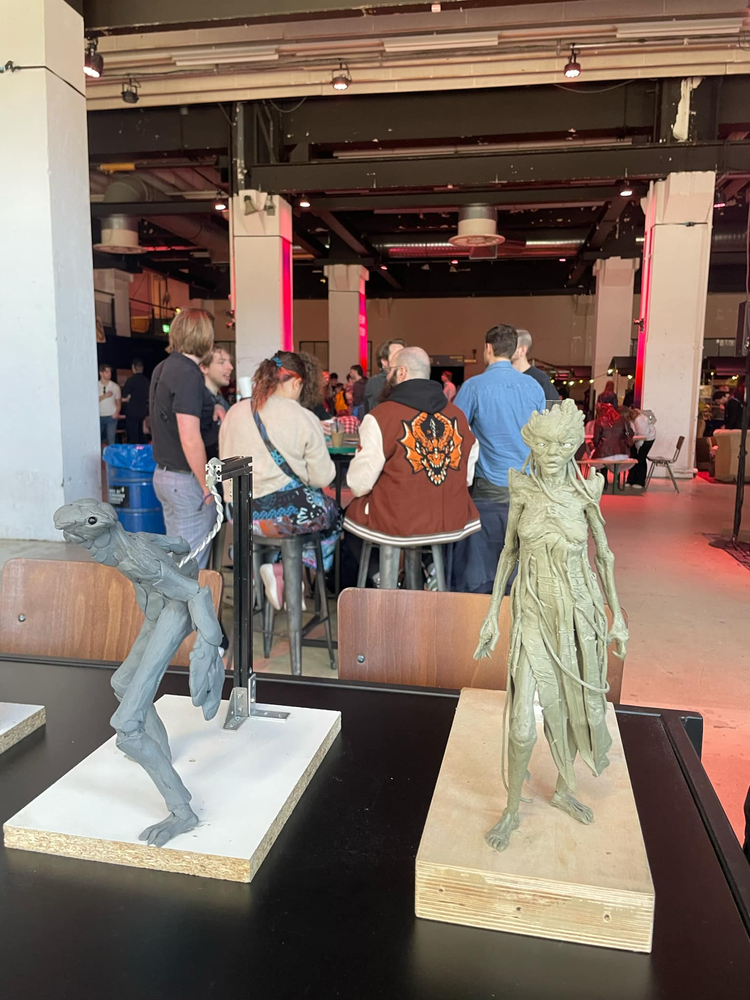
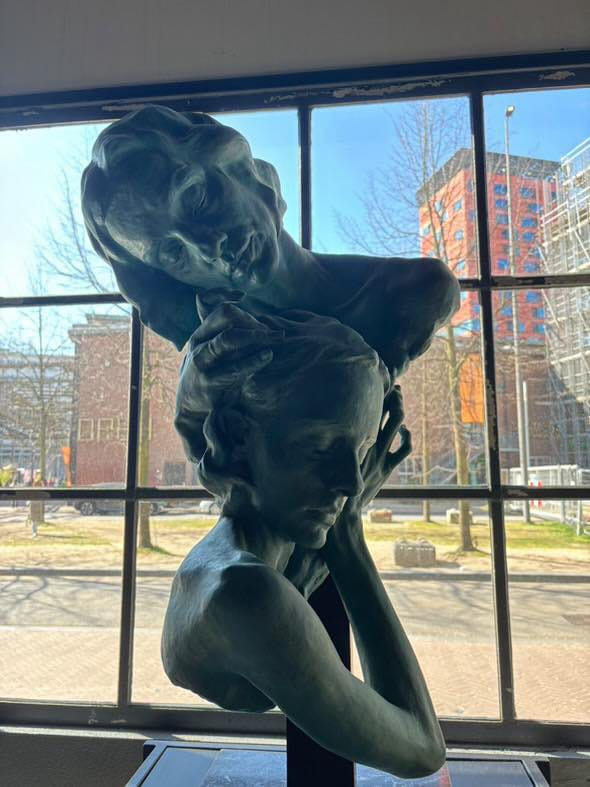
How Did It Go?
The experience was both interesting and slightly challenging. I enjoyed the hands-on process of creating something from scratch, but I also realized that this kind of detailed, slow-paced work isn’t exactly for me. Sculpting requires a lot of patience, attention to detail, and passion for the craft. While I appreciated learning about the process, I found that I didn’t feel fully engaged with it.
What I Learned
During this experience, I gained insight into the world of digital and physical media art. I learned about various tools such as Blender, 3D modeling software, animation platforms, and Illustrator, and saw how they are used to create detailed visual projects. I also learned that sculpting—whether digital or physical—requires a great deal of precision, patience, and passion.
Additionally, participating in the hands-on challenge gave me practical experience and a better understanding of the creative process behind character and object creation. Even though I made something simple like a penguin, I now have a clearer view of the effort that goes into producing professional-level work.
Reflection
Reflecting on this experience, I realized that while I appreciate the creativity involved in sculpting and modeling, it's not something I see myself doing long-term. The slow, detailed nature of the work didn’t fully capture my interest, and I found it hard to stay engaged with each tiny adjustment.
This helped me understand more about what kind of creative work suits me best. I may be more drawn to media that involves quicker execution, storytelling, or visual impact—like photography, film, or graphic design. Exploring this event gave me a better sense of direction and helped me start thinking more seriously about what role I might want to pursue within the media world.
Exploring My Future Through Code and Creativity
Introduction
I’ve taken some time to think about my future career. Orientation toward internships is a good start, but it also made me reflect more deeply on where I see myself in the long run. One thing that stands out for me is my passion for coding, especially when it comes to creating animations and interactive visual elements.
What I Did
Recently, I’ve spent more time experimenting with animation frameworks and learning how to bring websites and applications to life through code. I’ve used libraries like GSAP and Three.js to create smooth transitions, dynamic effects, and interactive elements. One memorable experience was a workshop I attended with one of my teachers, where I learned how to create a 3D cube that could move. After mastering that, I was shown how to replace the cube with a 3D seal model. That project really inspired me. After the workshop, I decided to continue working on the seal animation on my own. I made the seal move as if it were swimming like a mermaid, with smooth and flowing motions. To make it look even more realistic, I went a step further and created an ocean environment around it, including water effects and background elements to bring the whole scene to life.
How did it go?
It went surprisingly well. At first, animation coding felt a bit overwhelming with all the timing and transformation properties, but with consistent practice and problem-solving, I started to see real improvement. The workshop especially boosted my confidence and gave me a solid understanding of working with 3D models. Completing the swimming seal animation inside an ocean environment felt like a big step forward and confirmed how much I enjoy working on these kinds of creative projects.
What I Learned
I’ve learned that coding is not just about function—it can also be an art form. Animation requires both technical understanding and creative vision, and I enjoy that balance. From the workshop, I learned how to work with 3D objects and animate them realistically, which opened up a whole new area of interest for me. I also discovered how rewarding it is to build immersive environments that enhance the user experience.
Reflection
If I had all options open and could choose any job in the world, I would love to become a front-end developer or a creative coder who specializes in animations and interactive experiences—possibly even working in web-based game design or digital art installations. This field allows me to blend creativity with problem-solving, and that’s what truly excites me. Going forward, I want to look for internship opportunities that involve interactive design, animation, or front-end development so I can build the skills I need to pursue this dream.
How the travelling inspired my Project X
Introduction
During the spring vacation, my best friend and I traveled to her home country – Moldova. What made the trip especially exciting was that we first landed in Bucharest, Romania, and then continued on to Chisinau, Moldova. This journey gave me the unique opportunity to explore two different countries in just ten days.
What I Did
Our first stop was the Therme Spa Center in Bucharest, specifically the Palm area. I was amazed by its beauty – the tropical decor, palm trees, and luxurious pools created a peaceful and inspiring atmosphere. That moment sparked an idea for my Personal Project: I wanted to focus on themes connected to the sea and nature.
The following day, we traveled to my friend’s hometown in Moldova. While there, her parents took us to a local winery. Inside the winery was a fascinating museum, and one room was designed to look like the interior of a ship. The maritime setting immediately inspired me further. I realized I could center my project around sea life and animated movies. My vision started forming – I wanted to create an electronic magazine for children, combining sea-related themes with characters from famous animated films.
How did it go?
After visiting these two inspiring places, I officially decided that the theme of my Personal Project would be "sea movies." I chose animated films such as SpongeBob SquarePants, The Little Mermaid, Moana, and others as my focus. These movies not only align with the sea life theme but also provide rich content that is both educational and entertaining for children.
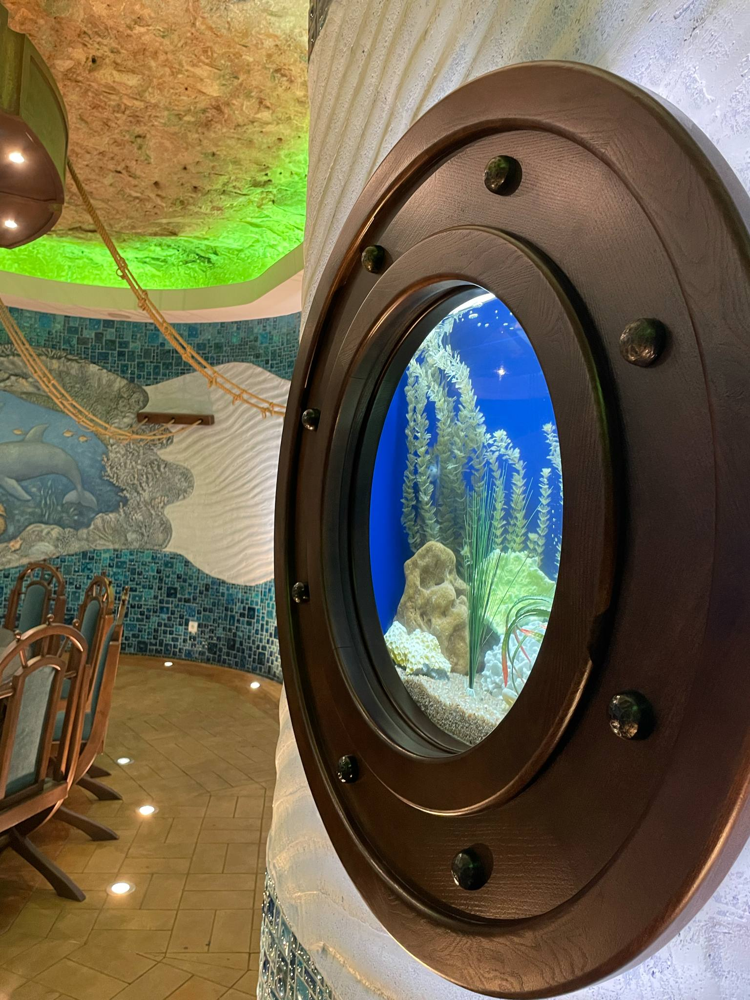
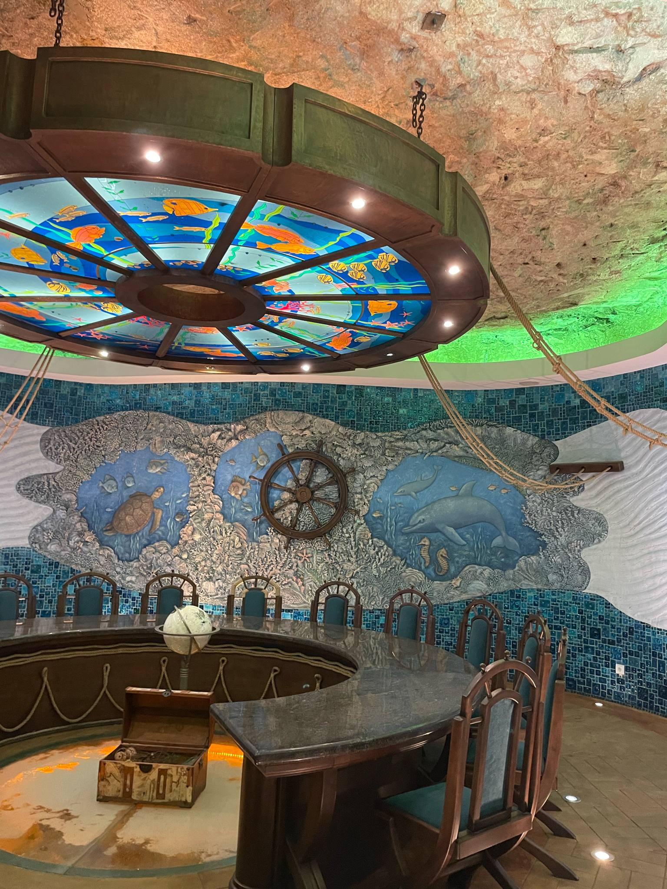
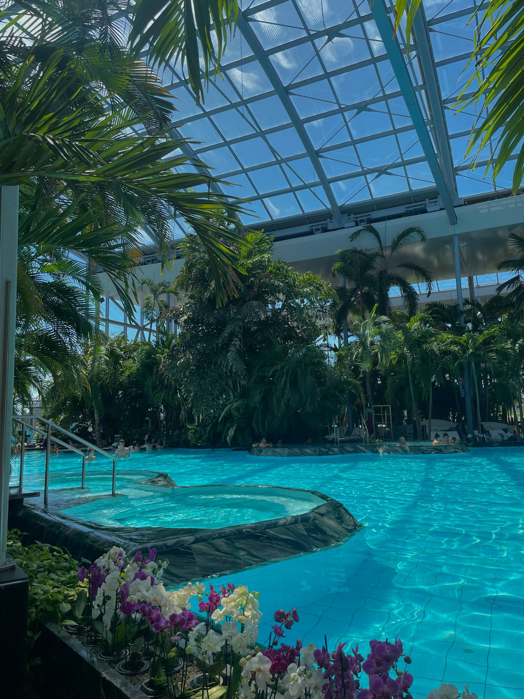
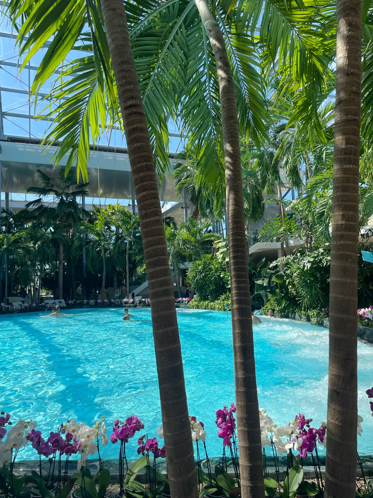
What I Learned
This trip taught me that traveling is not only a great way to explore new cultures and places but also an unexpected source of inspiration for creative projects. By experiencing different environments and artistic spaces, I gained valuable insights and ideas that directly contributed to my academic work. I also developed a deeper appreciation for cultural diversity, nature-inspired design, and the power of storytelling in animation.
Reflection
Looking back, this journey was more than just a vacation – it was a turning point for my creativity and personal growth. I discovered how powerful visual surroundings can be in sparking new ideas. I learned that inspiration can come from anywhere: a beautifully designed spa, a themed museum room, or simply observing how different cultures express themselves through art and architecture.
Moreover, I improved my ability to connect personal experiences with academic goals. By combining what I saw and felt with what I wanted to achieve, I created a meaningful and unique project idea. This experience showed me how learning doesn’t only happen in classrooms – it happens all around us, especially when we keep our eyes and minds open.
My Core values
Creativity
- I approach projects with originality and imagination, constantly seeking new ways to tell stories and solve problems.
- I believe creative thinking is essential in blending technology and communication effectively.
Collaboration
- I value teamwork and open communication, believing that diverse perspectives lead to better outcomes.
- I enjoy working with others to share ideas and create innovative solutions together.
Time Management
- I prioritize tasks and manage deadlines efficiently to balance academic work, creative projects, and personal growth.
- I set goals and break work into steps, allowing me to stay organized and productive under pressure.
- I understand the importance of consistency and reliability, especially in collaborative environments.
Adaptation
- I embrace change and quickly learn new tools, platforms, and media trends in an ever-evolving digital world.
- I stay open-minded and flexible, ready to adjust strategies or ideas to better fit the context or audience.
Innovation
- I constantly look for better ways to create, communicate, and solve challenges through technology.
- I enjoy experimenting with new tools, and ideas to push the boundaries of what's possible.
My Goal: Front-End Web Developer
I’m a student currently studying Media and Information and Communication Technology (ICT), and I’m passionate about building modern, user-friendly websites. My goal is to become a front-end web developer, where I can combine creativity and technology to craft engaging digital experiences.
Through my studies, I’ve developed a strong interest in web technologies and how they shape the way we interact with information. I’m especially drawn to front-end development because it allows me to bring visual ideas to life with tools like HTML, CSS, JavaScript, and frameworks such as React. I want to learn React and other modern front-end frameworks to build dynamic, responsive web applications and improve my skills in creating smooth, user-friendly interfaces.
I’m excited to keep learning, grow my skills, and work on real-world projects that make a difference. Web development is more than just a career path for me — it’s a field where I can continuously evolve and create meaningful, interactive experiences for users.
I want to become a front-end web developer because I find it truly interesting and it gives me the opportunity to do something I am passionate about. Working in this field allows me to combine creativity with technology, which motivates me to keep learning and growing every day.
Career day
Introduction
I went with my friends to the Fontys Career Day.
What Did I Do?
There, I explored my future career options in development alongside my friend. I walked through the hall to listen to different opinions about various opportunities. The most interesting option for me, which matched my interests, was front-end development. After learning more about it in depth, I decided that my specialization choice for semester 3 will be front-end development.
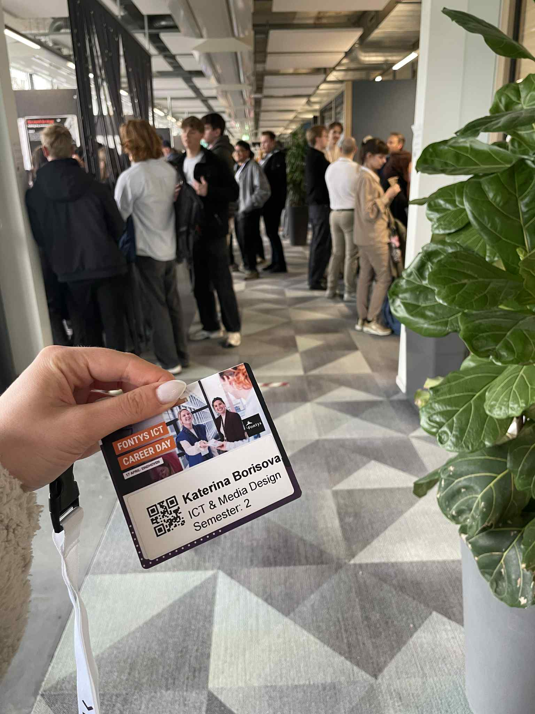
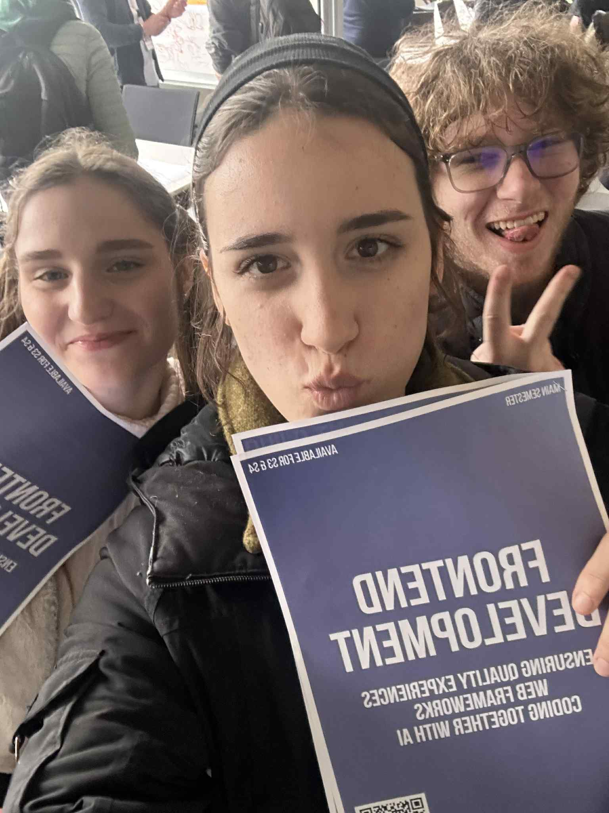
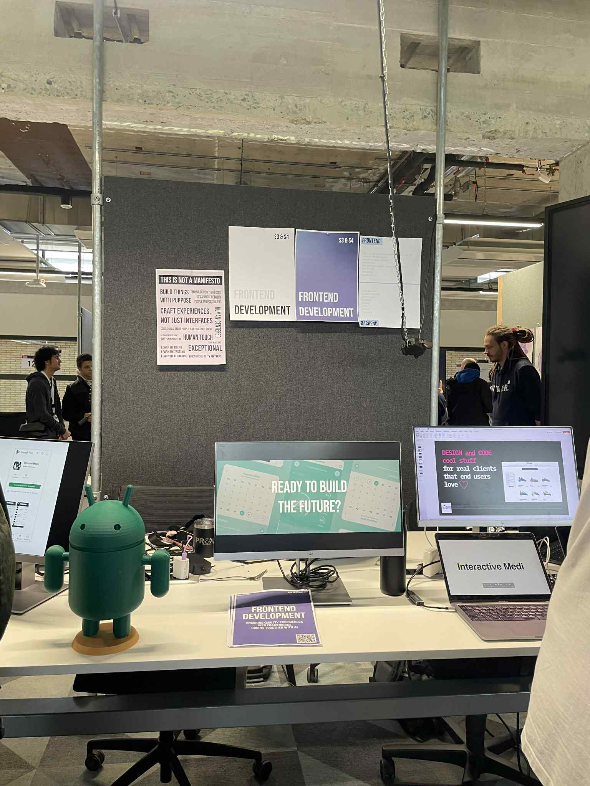
How Did It Go?
The event went really well. I had the chance to meet professionals and students who shared their experiences and advice. It was inspiring and helped me gain clarity about the direction I want to take. The atmosphere was welcoming, and I felt motivated to pursue my goals with more focus.
What I Learned
I learned exactly what I will be studying in this program, including the core skills and technologies involved in front-end development, such as HTML, CSS, JavaScript, and popular frameworks like React. This helped me understand the content and challenges of the specialization I chose and confirmed that it fits my interests.
Reflection
Attending the Fontys Career Day was a valuable experience that helped me make an informed decision about my academic and professional future. I realized the importance of exploring different fields before committing to one and how firsthand information can guide better choices. I am excited to dive deeper into front-end development and confident that this specialization will suit my strengths and passions.